STRIP_01_FRAME_01 — Nord (Calea Manastur) - Vest
Banda 1
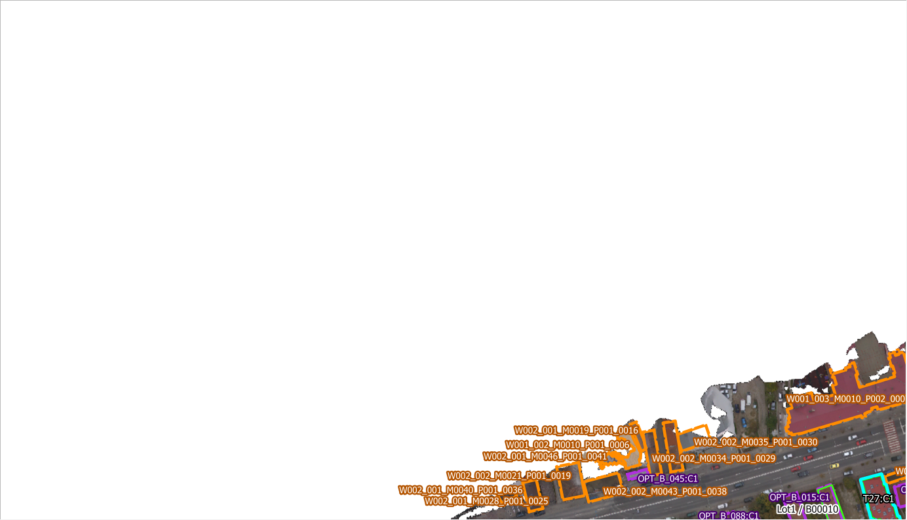
STRIP_01_FRAME_02 — Nord (Calea Manastur) - Vest
Banda 1
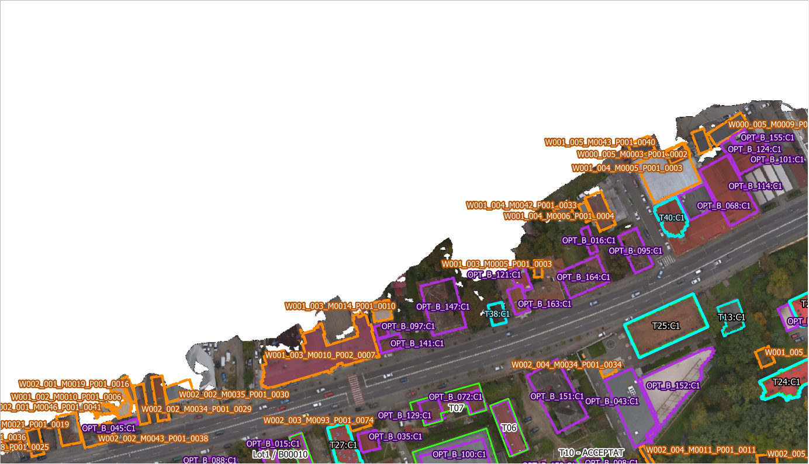
STRIP_01_FRAME_03 — Nord (Calea Manastur) - Centru
Banda 1
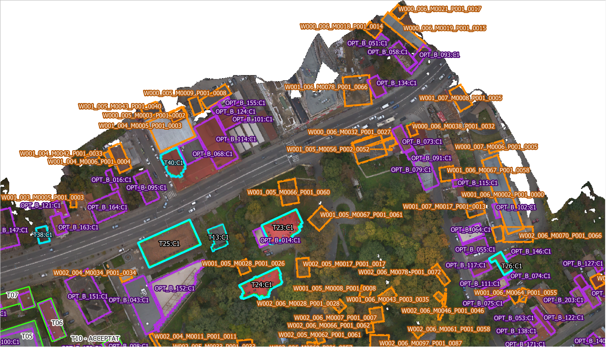
STRIP_01_FRAME_04 — Nord (Calea Manastur) - Centru
Banda 1
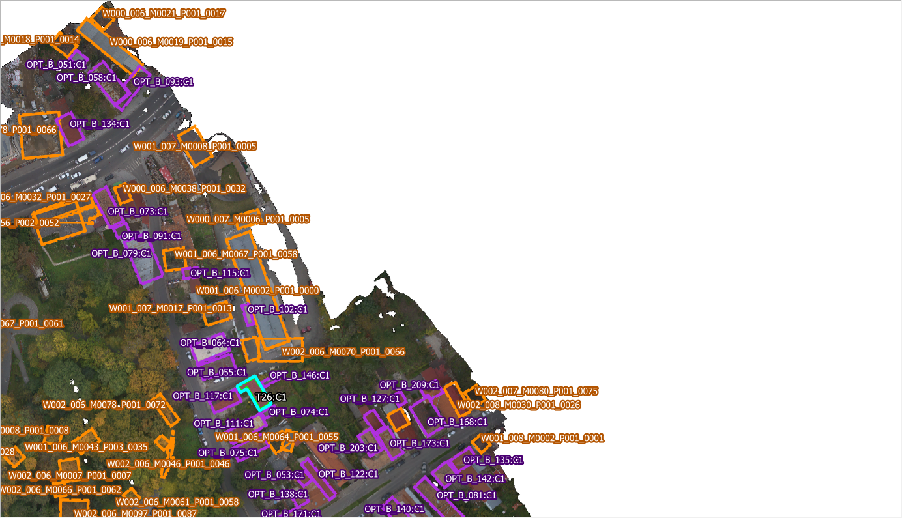
STRIP_02_FRAME_05 — Nord (Calea Manastur) - Est
Banda 2
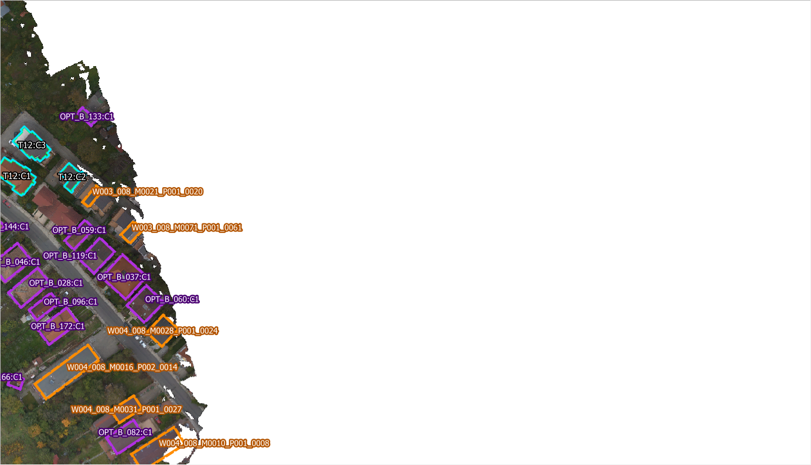
STRIP_02_FRAME_04 — Nord (Calea Manastur) - Centru
Banda 2
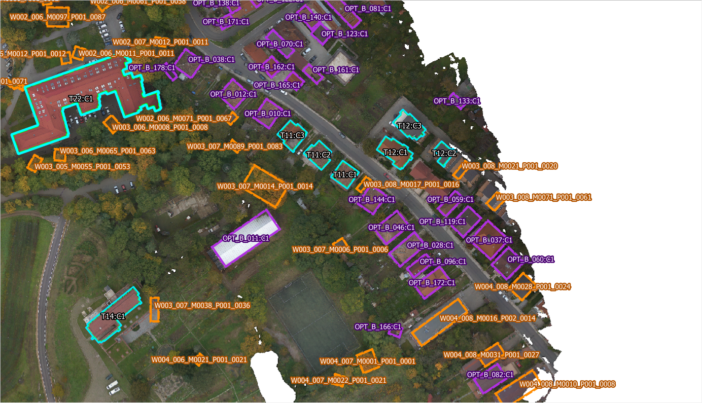
STRIP_02_FRAME_03 — Nord (Calea Manastur) - Centru
Banda 2
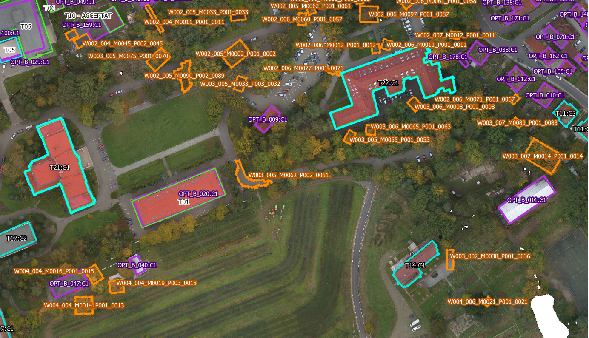
STRIP_02_FRAME_02 — Nord (Calea Manastur) - Vest
Banda 2
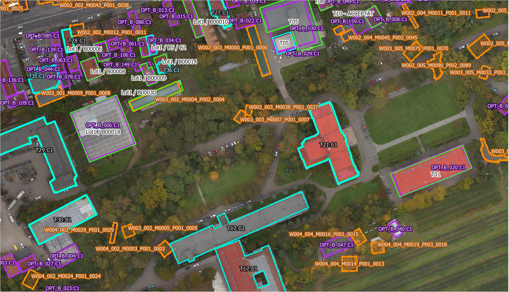
STRIP_02_FRAME_01 — Nord (Calea Manastur) - Vest
Banda 2
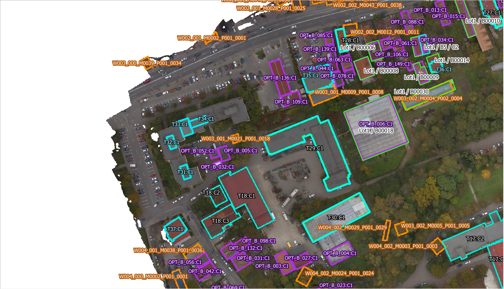
STRIP_03_FRAME_01 — Centru (Campus USAMV) - Vest
Banda 3
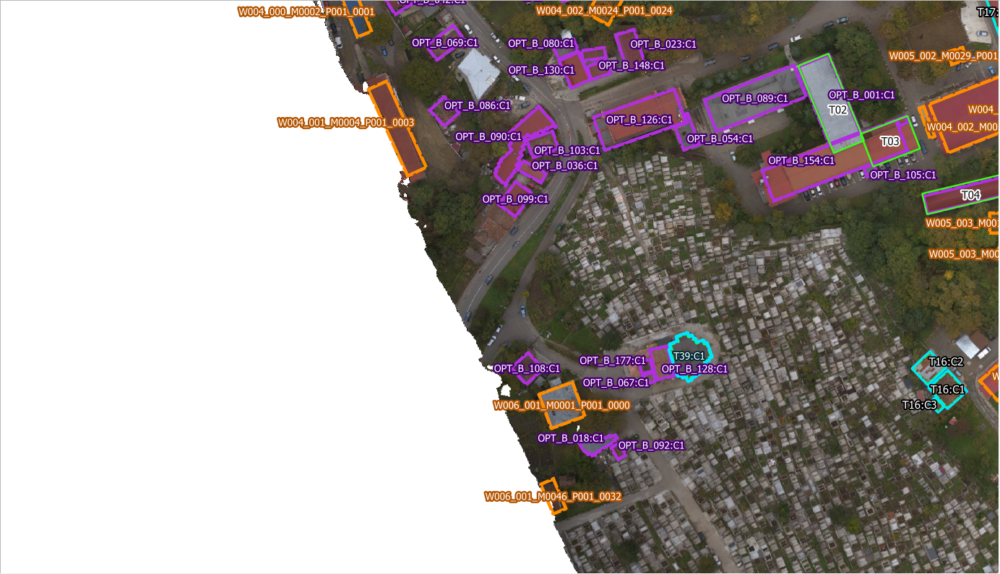
STRIP_03_FRAME_02 — Centru (Campus USAMV) - Vest
Banda 3
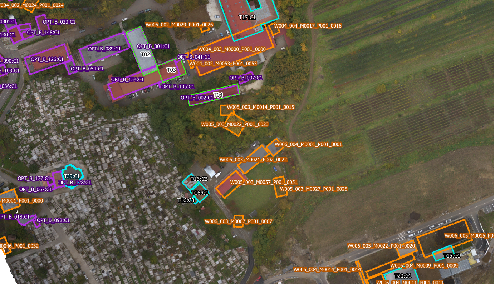
STRIP_03_FRAME_03 — Centru (Campus USAMV) - Centru
Banda 3
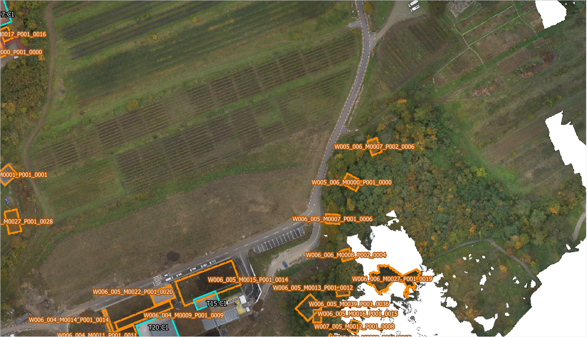
STRIP_03_FRAME_04 — Centru (Campus USAMV) - Centru
Banda 3
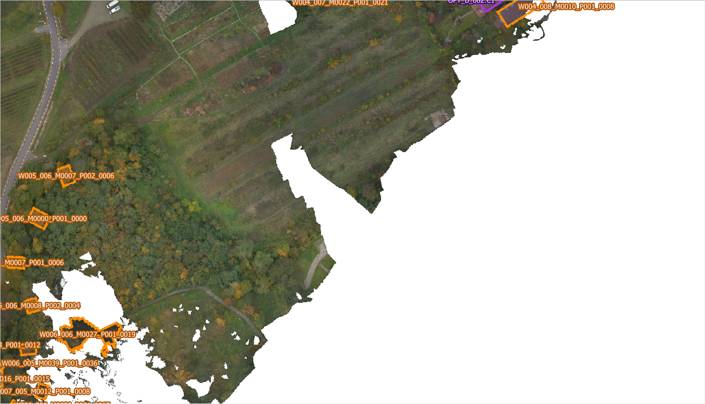
STRIP_03_FRAME_05 — Centru (Campus USAMV) - Est
Banda 3
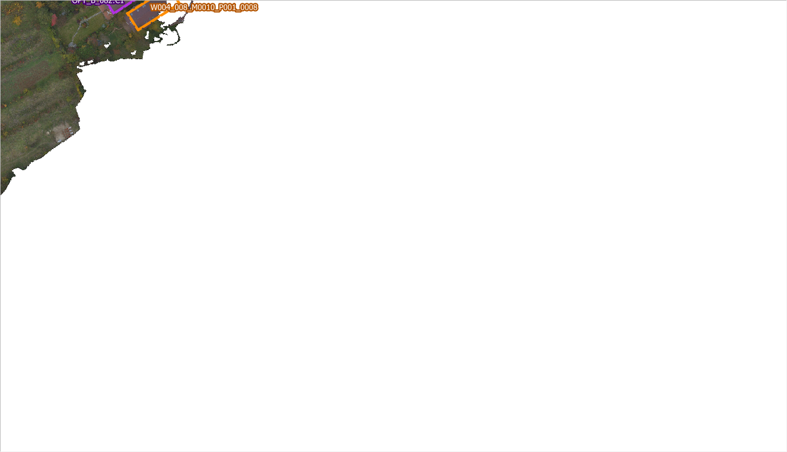
STRIP_04_FRAME_03 — Sud (Cimitir / Bazine) - Centru
Banda 4
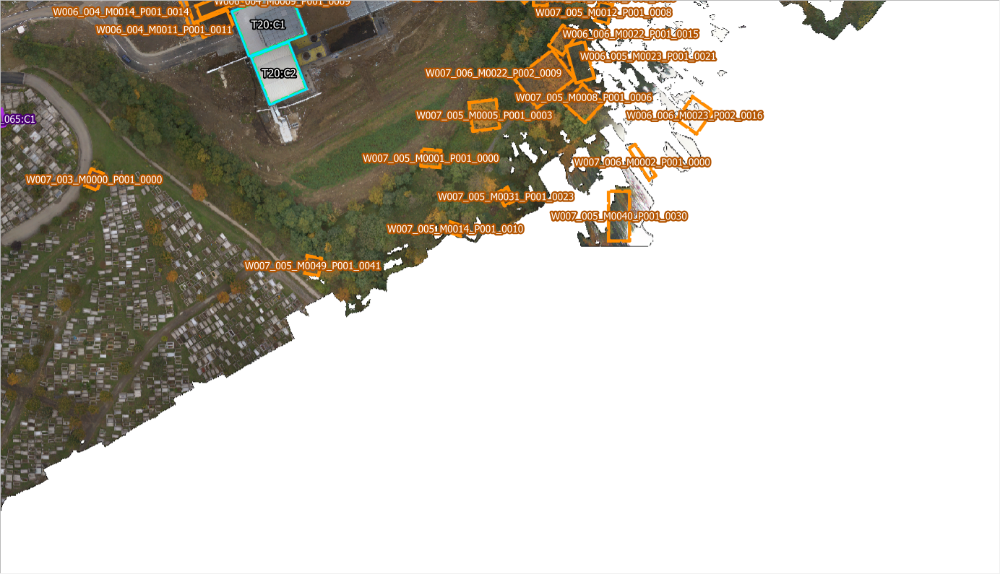
STRIP_04_FRAME_02 — Sud (Cimitir / Bazine) - Vest
Banda 4
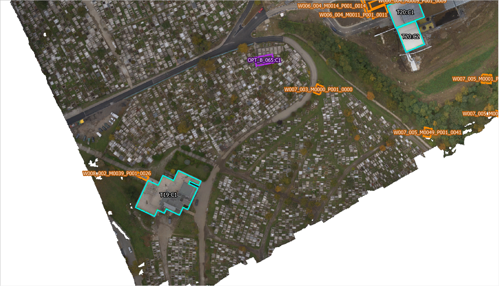
STRIP_04_FRAME_01 — Sud (Cimitir / Bazine) - Vest
Banda 4
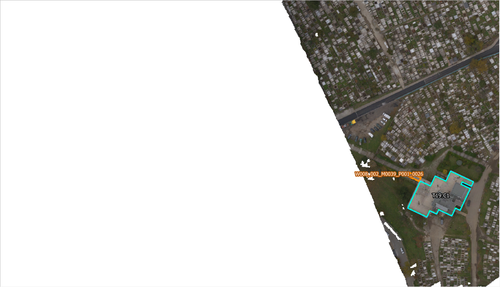
STRIP_05_FRAME_03 — Sud (Cimitir / Bazine) - Centru
Banda 5

STRIP_05_FRAME_04 — Sud (Cimitir / Bazine) - Centru
Banda 5

STRIP_05_FRAME_05 — Sud (Cimitir / Bazine) - Est
Banda 5